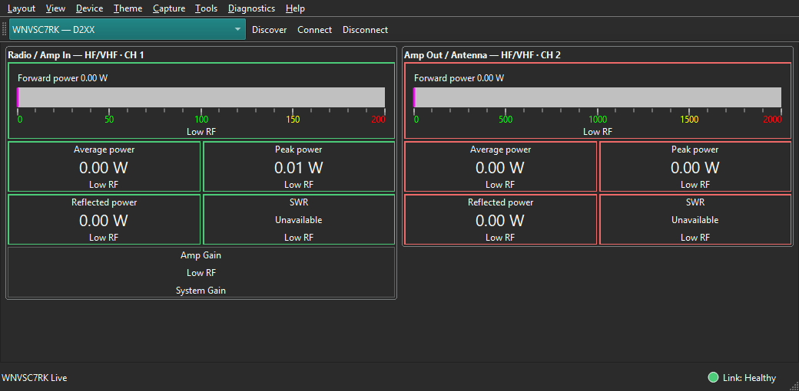

First station connection
Follow these steps when the WN-2 is connected by USB to this computer. If the meter is connected to another computer, start with Remote Station instead; establish the host first, then connect and bind your Remote Client instruments.
On this page
- Before connecting
- Connect in RayWn2App
- Check the idle display
- Save your arrangement
- Ready-to-use checklist
For coupler direction, radio/amplifier cabling, grounding and protection wiring, follow the illustrated station setup guide.
On first use, RayWn2App starts in the Dark theme with a taller window to show Channels 1–4. The window fits the available screen; smaller screens can still scroll. Saved themes and window sizes take precedence.
Before connecting
Power the WN-2 and connect its USB cable to your computer. On Windows, first install the WaveNode USB driver for Windows 10 and 11; see Windows driver setup. Begin with the transmitter in receive. Close any other program, or running service that is using the same WN-2.
A Station Host service can use the meter even when no application window is open. Only one application or service can own the same USB meter at a time. If you intentionally use an unattended host, leave it running and connect as a Remote Client. Otherwise, follow check and stop the service before direct USB use. Do not open D2XX and VCP for the same meter together.
Connect in RayWn2App
- Start RayWn2App. One uniquely identified WN-2 can connect automatically. If it already shows Live, skip the next two steps. Otherwise press Discover on the toolbar below the menus.
- Open the device list and select your WN-2 serial number. The connection name may include D2XX or VCP and a COM port.
- Press Connect. Wait for Live and a healthy link indication at the bottom of the window.
- Open Device → Settings. Select that WN-2 and check the RF couplers tab. Choose the model actually connected to each channel. Leave Apply coupler types to the connected WN-2 on OK checked, then press OK. Check the correct models before transmitting. The software profile, current hardware family and standalone storage are explained in Coupler settings.
- The untouched initial Untitled layout binds automatically when the first connected device supplies live data. For another arrangement, open Layout → Station Layouts, choose Single Radio or Radio and Amplifier, select your WN-2 identity, and load it. Saved or edited layouts are not rebound automatically.
- For an existing, edited or shared layout, choose Layout → Bind instruments to device…. Select your WN-2, choose Entire layout (or one section in a multi-device layout), review the changed count and click Bind instruments. Channel numbers, measurements and appearance stay the same. If the button is disabled with zero assignments to change, the instruments in scope already use that device. See binding instructions.

The serial number identifies the connected WN-2; each instrument is assigned to one of its channels. Select image to enlarge.

New device/channel profiles start with HF-1 and a 2,000 W software range. This is a starting choice, not automatic sensor detection. Select the actual coupler models before transmitting. Your saved models, calibration, measurement policies, layouts and display ranges are retained. The new initial layout has average and peak forward-power bars, SWR and reflected average power on all four channels. You can customize or replace this arrangement later.
Check the idle display
With no transmitted RF, power may read zero or a small residual value. SWR can say Low RF or Unavailable because there is not enough forward power to calculate a useful ratio. That is different from a disconnected device. The RF couplers are factory calibrated. Additional calibration is not a first-use step. Selecting the correct coupler model is important; reference matching is an optional later choice.
Save your arrangement
Choose Layout → Save Layout As, enter a meaningful name and save. Your next session can use the same arrangement. See Layouts for alternatives and customization. If instruments say Device unavailable, use Layout → Bind instruments to device… to select their source. Use an individual instrument’s Properties to change its channel or measurement. Selecting a different toolbar device does not automatically reassign instruments.
Ready-to-use checklist
- The connected serial number matches your WN-2 and the link is Live/healthy.
- Each channel has the actual coupler model selected.
- The instruments use the intended device and channel.
- Idle power and Low RF/Unavailable SWR make sense with no transmission.
- Your layout is saved with a useful name.
You do not need to perform user calibration or change advanced calculations to begin. See Measurement processing when you want to understand the selected calculation preset. If a step does not work, use the connection troubleshooting table.
Help home · RF StateSide · RayWn2App operator guide